Instala el plugin "Flutter"
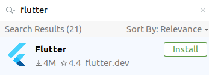
Crea un nuevo proyecto Flutter
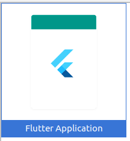
Instala el SDK de Flutter
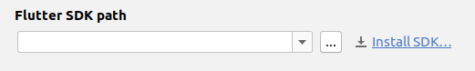
Crea un proyecto Firebase
- Accede a la consola de Firebase https://console.firebase.google.com
- Selecciona o crea un proyecto
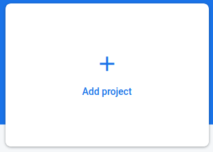
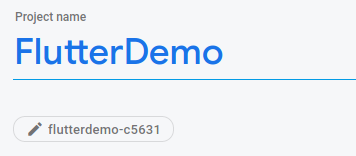
- Crea tambien la base de datos "Cloud Firestore" y establece las reglas a
allow read, write;
Selecciona "Android"
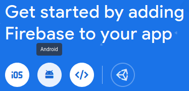
- Registra la App
Encontrarás el "package name" en el ficheroAndroidManifest.xml
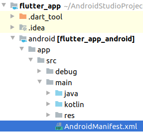
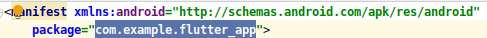
El certificado SHA-1 se obtiene con el siguiente comando:
keytool -list -v -alias androiddebugkey -keystore ~/.android/debug.keystore

- Descarga el fichero google-services.json
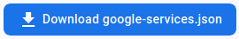
Arrastralo a la carpeta flutter_app/android/app
- Añade la siguiente linea al fichero
flutter_app/android/build.gradle, en el apartadobuildscript > dependencies
classpath 'com.google.gms:google-services:4.3.3'

- Añade la siguiente linea al fichero
flutter_app/android/app/build.gradle:, debajo de la líneaapply plugin: 'com.android.application':
apply plugin: 'com.google.gms.google-services'
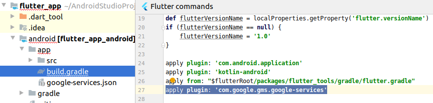
- Establece el minSdkVersion a un minimo de 21:
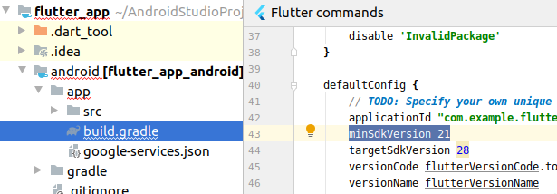 - Añade el plugin "cloud_firestore" en el fichero
flutter_app/pubspec.yaml, en el apartadodependendencies:
cloud_firestore: ^0.13.3
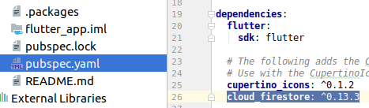
Añadiremos la siguiente línea de codigo para probar que se guardan datos en la base de datos:
En el fichero flutter_app/lib/main.dart añade esta línea al método _incrementCounter():
Firestore.instance.collection("counters").document("counterA").setData({'clicks': _counter});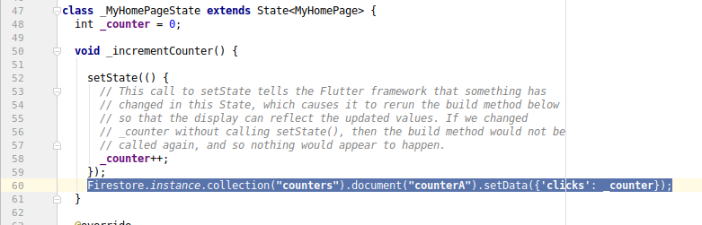
Comprueba que cuando haces click en el botón se actualiza la base de datos:
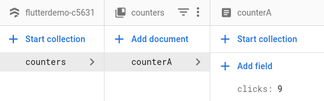